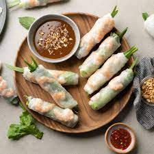

Spring Rolls

How to make Vietnamese Spring Rolls
Making spring rolls is not only really easy to make but one of the most healthy and satisifying foods to eat during the summer
The ingredients that we will need are as followed:
- 4 (8-inch) round rice papers
- ¾ cup cooked rice vermicelli
- 4 ounces shredded cooked chicken
- 1 cup thinly sliced English cucumber
- ¼ cup chopped fresh mint
- 2 tablespoons tzatziki sauce
Directions
- Fill a 9-inch pie plate with warm water; dip 1 rice paper into the water.
Transfer to a work surface and let stand for a few seconds to soften.
- Snip cooked rice noodles. Arrange 3 tablespoons noodles across the lower 1/3 of the softened rice paper.
Top with 1 ounce chicken, 1/4 cup cucumber, 1 tablespoon mint, and 1/2 tablespoon sauce.
Fold and lightly press bottom edge of rice paper over filling, tucking it underneath as you roll away from you.
Fold in sides and continue to roll up tightly. Repeat with remaining ingredients.